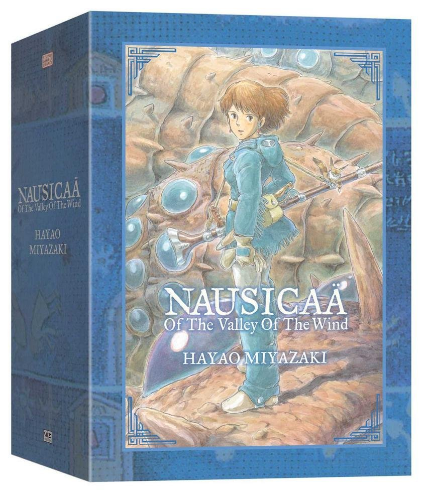

Future Quest Volume 1
In this new series from DC Comics, follow some of Hanna-Barbera's most famous characters as they race to prevent a galaxy-spanning crisis!
$11.99
Nausicaä of the Valley of the Wind Box Set

From acclaimed director Hayao Miyazaki comes his Magnum Opus, Nausicaä of the Valley of the Wind, now in a deluxe hardcover Collector's Edition. Set in a post-apocalyptic future, it tells the story of the princess Nausicaä, as she works to avoid both war and another potential cataclysm
$64.99
Naoki Urasawa's Monster: Perfect Edition Vol.1

In this acclaimed manga from Naoki Urasawa, follow Dr. Kenzo Tenma as he journeys to stop the cold-blooded murderer Johan, and uncovers a conspiracy dating back to the Cold War.
$14.99
The Adventures of Tintin: The Secret of the Unicorn
In this first entry of the long-running Adventures of Tintin, he discovers a model ship containing clues to a long lost pirate treasure, and sets out to find it with the help of his friend Captain Haddock
$11.99
Valerian and Laureline: The Complete Collection Vol.1
This first volume contains Books 1 and 2, and for the first time in english Book 0, of the classic French comic Valerian and Laureline. Join them as they traverse the stars and time protecting the order of the universe from rogue time travelers and evil rulers
$34.99
JoJo's Bizarre Adventure: Phantom Blood Vol.1

In this first part of the famous JoJo series, follow Jonathan Joestar as he sets out to defeat his adopted brother, Dio Brando, after he uses a mysterious stone mask to become a deadly vampire in an attempt to rule the world!
$19.99